Fotos reales,
peludos de verdad.
Todo lo que ves aquí sale del Instagram de Pelucans: sus publicaciones, destacados y reels. Sin fotos de archivo.
- +44
- fotos de
clientes - 6
- destacados
de Instagram - 4
- reels
del salón


Los seis destacados.
Los mismos de su perfil: clientes, productos, Vinted Go, servicios, horario y reseñas. Pulsa un círculo para recorrerlo a pantalla completa.
Con movimiento.
Cuatro vídeos del salón. Se abren con el reproductor oficial de Instagram solo cuando los pulsas.
El cambio
se nota.
Desliza cada foto para comparar.

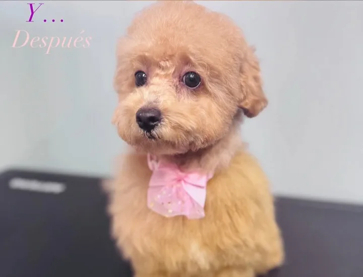
AntesDespuésCaras felices,
colas moviéndose.
Fotos de clientes tomadas de los destacados de Instagram. Pulsa una foto para verla grande y usa las flechas para recorrerlas.


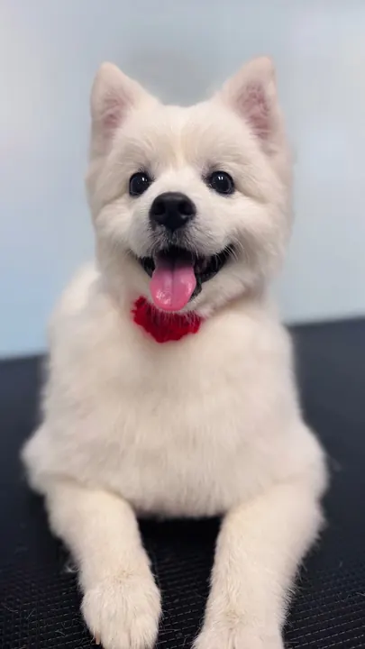
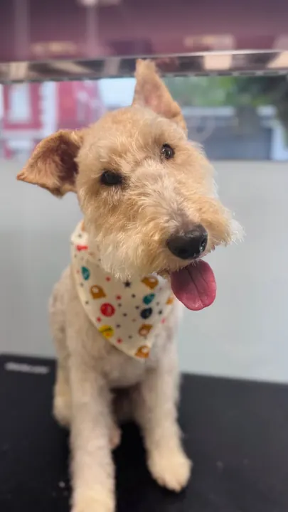
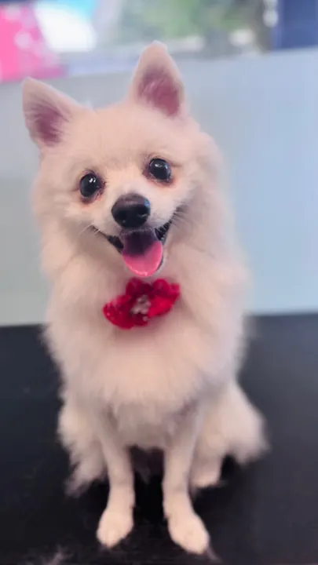
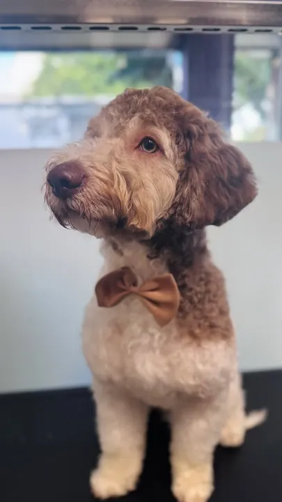
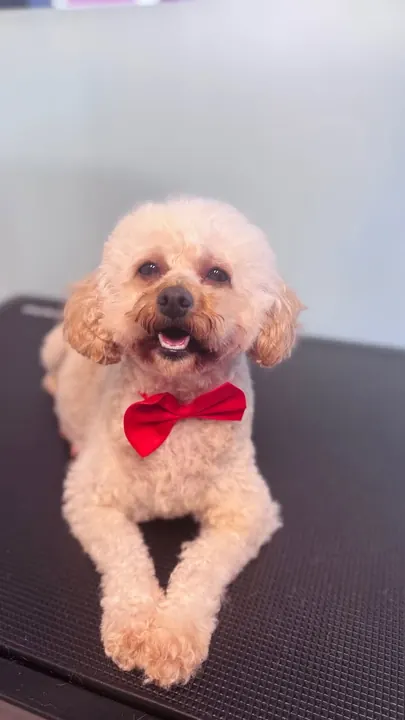

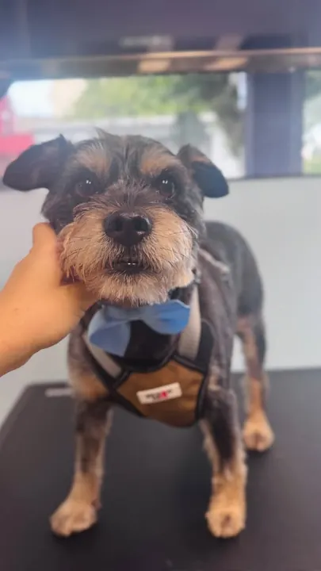
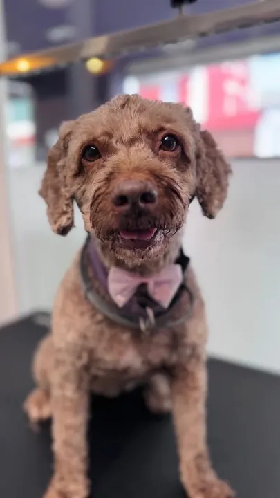
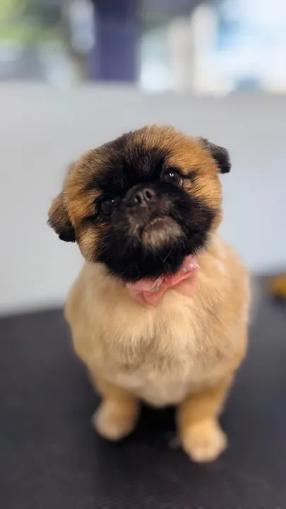
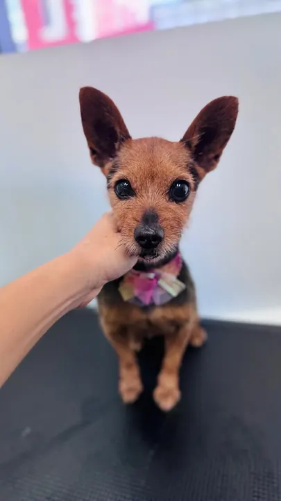
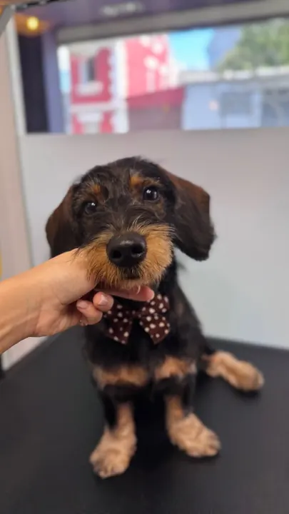
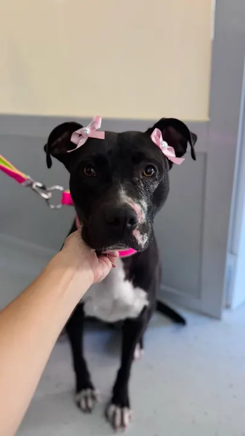
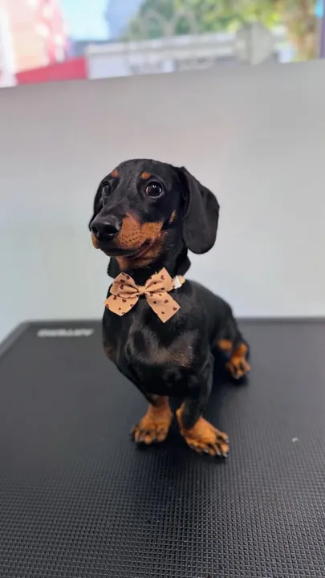

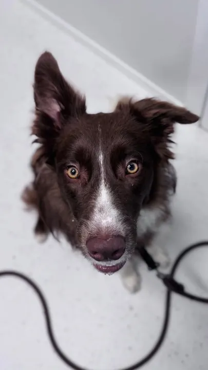


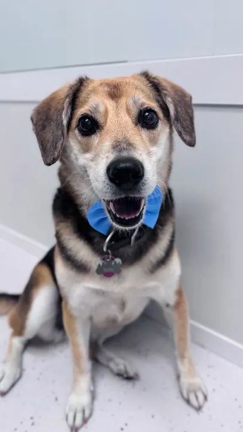
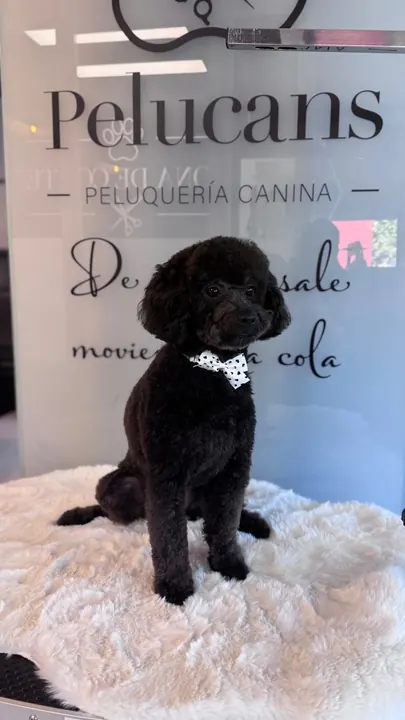
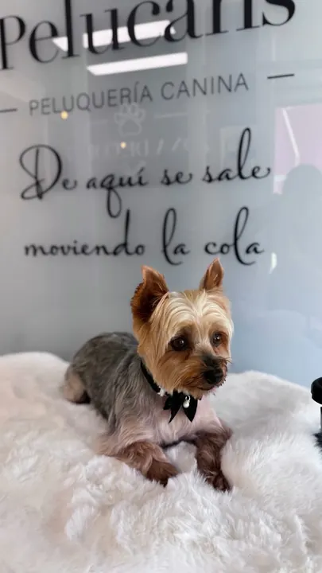
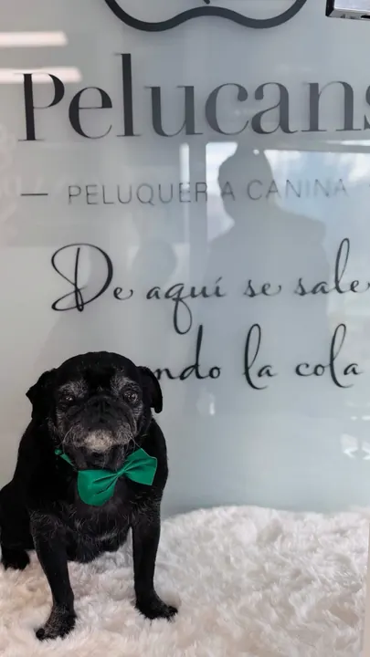
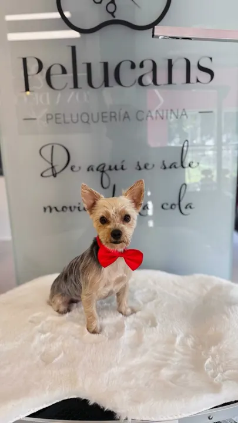
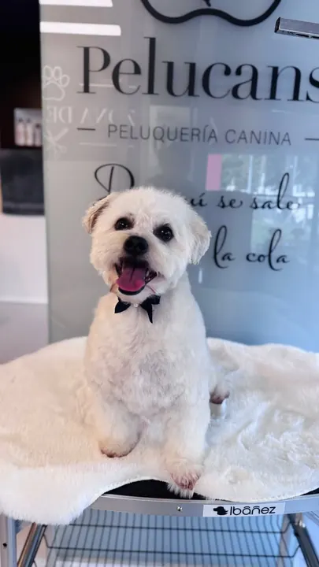
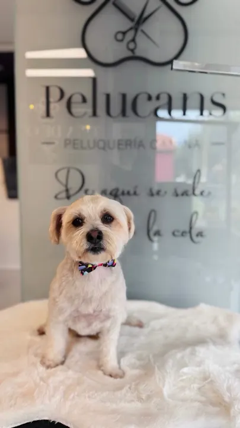
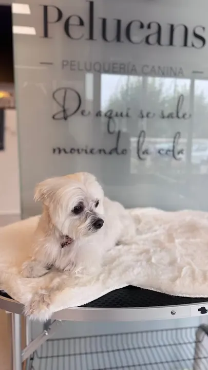
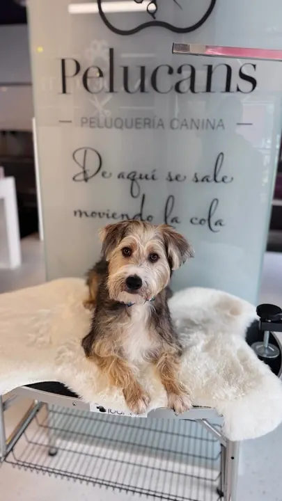
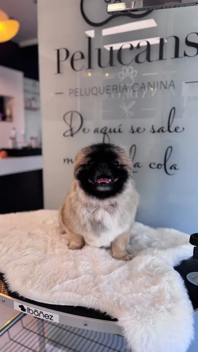
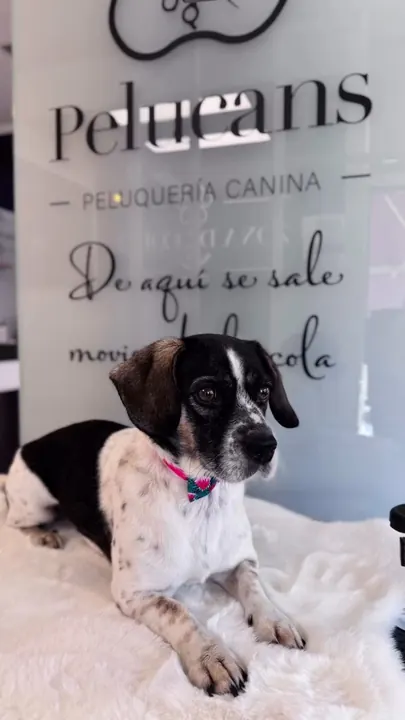
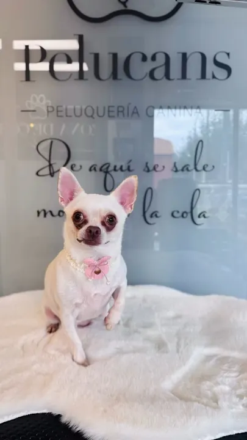
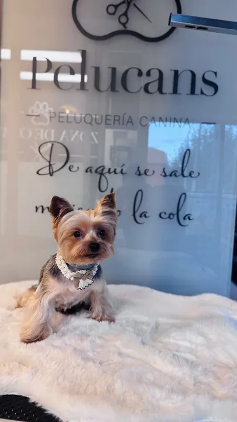
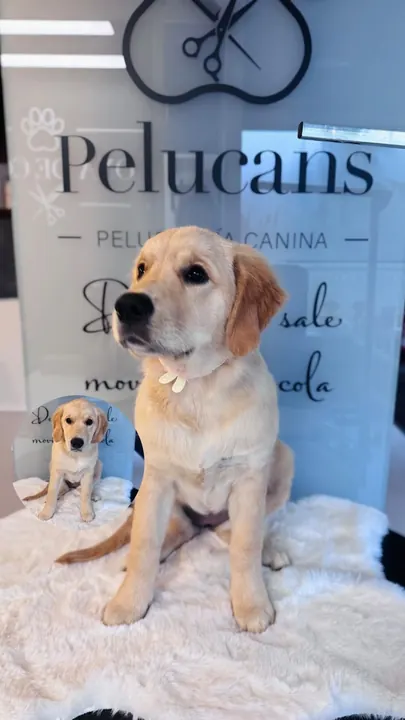

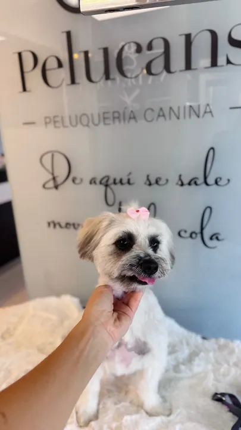
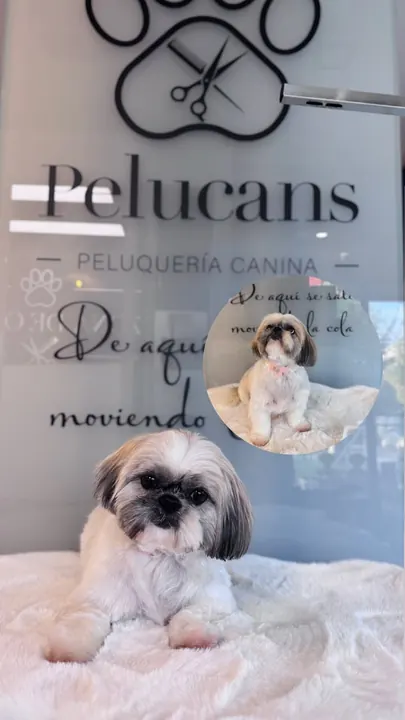
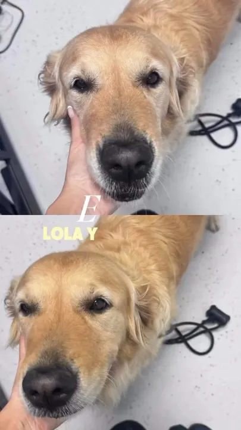

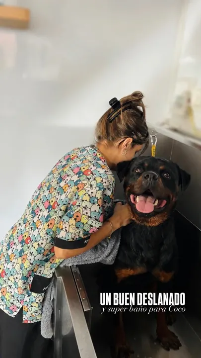
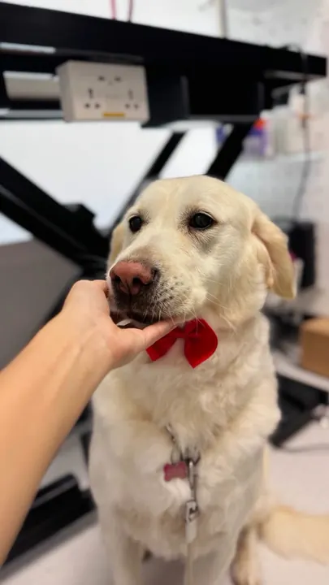
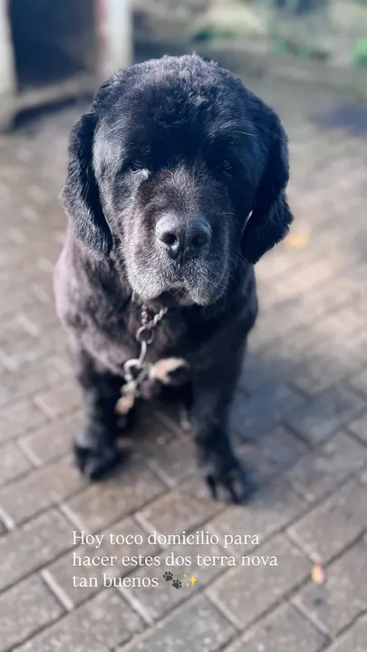


Nos encantará conocer a tu peludo.
Cuéntanos cómo es, qué le gusta y qué necesita. Del resto nos encargamos nosotros, con calma.